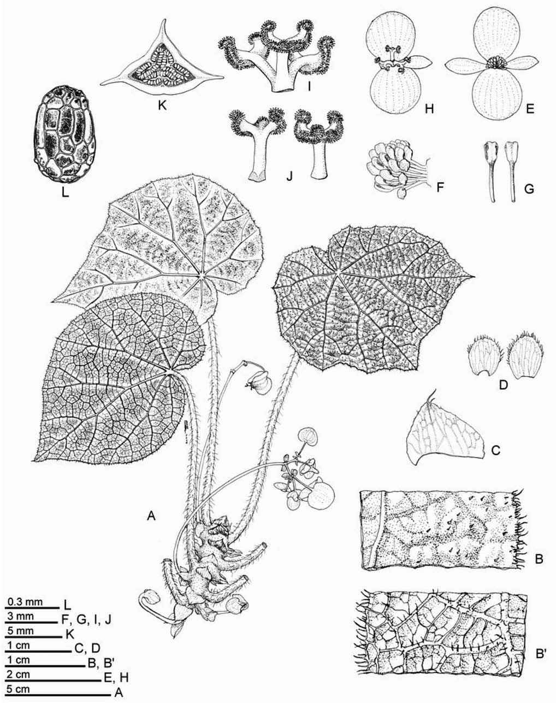
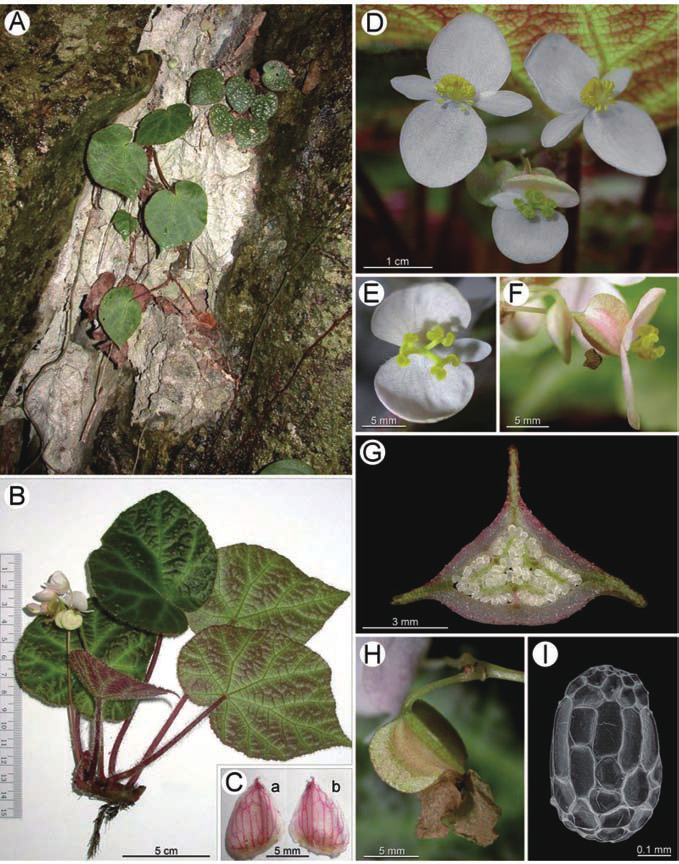
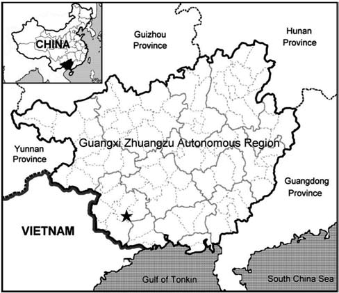
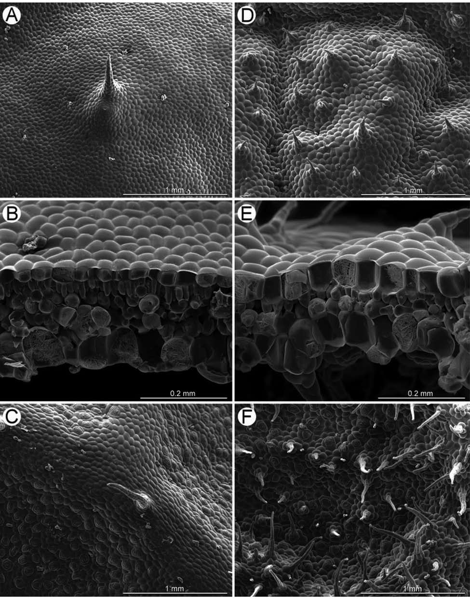

Begonia chongzuoensis (sect. Coelocentrum, Begoniaceae), a new calciphile from Guangxi, China
Abstract
Full text
Full text is available as a scanned copy of the original print version.
Get a printable copy (PDF file) of the
complete article, or click on a page image below to browse page by page.
Links are also available for
Selected References.
Images in this article

Figure 1 Begonia chongzuoensis Yan Liu, S. M. Ku & C.-I Peng. A, Habit; B, Portion of leaf, adaxial surface showing margin and indumentum, B’, abaxial surface; C, Stipule; D, Bracts; E, Staminate flower; F, Androecium; G, Stamens; H, Carpellate flower, face view; I, J, Style and stigmas; K, Cross section at middle of young fruit; L, Seed. All from C.-I Peng et al. 20390 (HAST).

Figure 2 Begonia chongzuoensis Yan Liu, S. M. Ku & C.-I Peng. A, Habitat; B, Habit; C, Stipules, a: adaxial surface, b: abaxial sur- face; D, Staminate and carpellate flowers; E, Carpellate flower, face view; F, Carpellate flower, side view; G, Cross section at middle of young fruit; H, Fruit; I, Seed SEM microphotograph. All from C.-I Peng et al. 20390 (HAST).

Figure 4 Distribution of Begonia chongzuoensis () in Guangxi Zhuangzu Autonomous Region, China.
Figure 3 Somatic chromosomes at metaphase of Begonia chongzuoensis, 2n = 30 (from C.-I Peng et al. 20390-A). A, Microphotograph. Arrows indicate longer metacentric chromosomes in the complement; B, Somatic chromosomes serially arranged by length and position of centromeres. Scale bars = 2 µm.

Figure 5 Begonia leaf SEM microphotographs. A-C, Begonia chongzuoensis; D-F, B. obliquifolia; A, D, Trichomes on upper epidermis; B, E, Lamina, cross section; C, F, Trichomes on lower epidermis.
Figure 6 Begonia obliquifolia S. H. Huang & Y. M. Shui. A, B, Habit and habitat; C, Specimen; D, Inflorescence, showing staminate flower; E, Carpellate flower from specimen; F, Fruit; G, Fruit, middle cross section; H, Seed SEM microphotograph. All but E from C.-I Peng et al. 20506 (HAST), E from Xiao-Bai Jin 165 (PE).